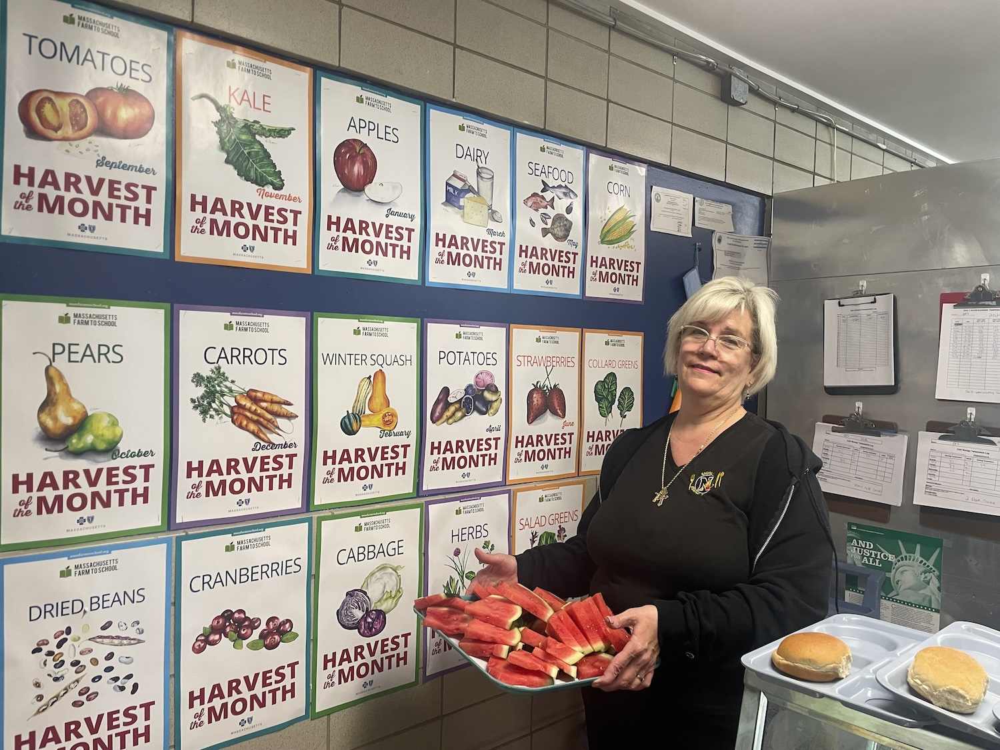

A year-long professional learning cohort for school and early education teams who want to build a comprehensive, lasting farm to school program — with expert coaching every step of the way.
The Massachusetts Farm to School Institute is a selective, year-long professional development program that equips school and early education teams to integrate local food, hands-on learning, and community connection into the everyday life of their school. Teams represent a mix of roles and work together to build a customized Farm to School Action Plan, guided by experienced coaches.
The Institute is held in partnership with the Northeast Farm to School Collaborative, building on evidence-based best practices in professional learning developed since 2015. Massachusetts Farm to School is a licensed Professional Development provider with the MA Department of Elementary and Secondary Education.

From spring team formation through an end-of-year celebration, each phase builds on the last, turning professional learning into lasting school-wide change.
Identify a diverse team of 4–7 members — educators, nutrition staff, coordinators, administrators, and family or community partners. Apply together and secure your spot with a $600 program fee (scholarships available).
Attend a two-day professional development retreat. Collaborate on a comprehensive Farm to School Action Plan covering curriculum, procurement, outdoor learning, and community engagement.
Meet regularly with an experienced farm to school coach. Join role-specific learning communities for educators, nutrition staff, coordinators, and student leaders throughout the year.
Every action plan teams build during the Institute is anchored in these four interconnected areas of farm to school work.
Weave food systems, agriculture, and local farm stories into classroom learning across subjects and grade levels.
Activate school gardens to become outdoor classrooms so students can grow, harvest, and connect with where food comes from.
Expand purchasing of locally grown foods for school meals, connecting cafeterias directly to Massachusetts farms and fisheries.
Build lasting partnerships with local farmers, families, and neighbors to sustain and expand farm to school culture.
Created a student Food Ambassadors program where 10th and 11th graders serve two-year terms in food and nutrition leadership, testifying before state legislators and leading community taste tests.
Engaged more than 30 educators through hands-on professional development, and expanded preschool garden lessons to reach the youngest learners.
An early childhood education example, with heading and body, will be added here once supplied by the client.
Applications open each spring. Schools, early education programs, and district teams from across Massachusetts are welcome to apply. Scholarships are available to ensure access for all communities.